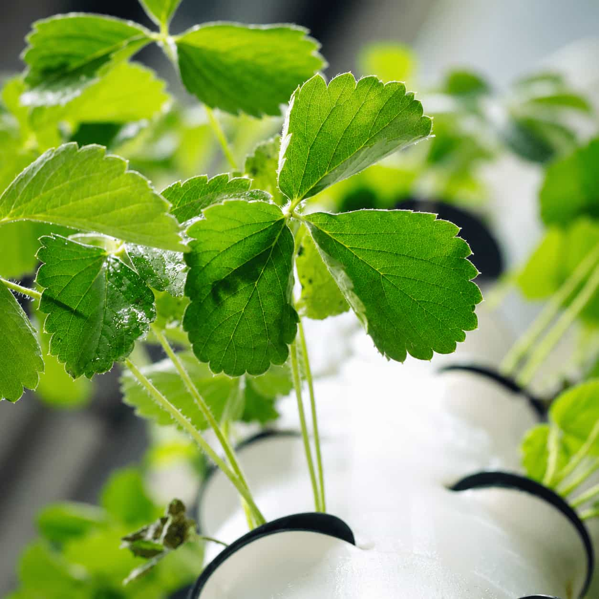

Consider usable width, height, natural light, nearby power, water access, drainage,
airflow, surfaces, storage, and the way people move through the room.
Access for observation
Equipment clearance
Moisture-safe placement
Select a Realistic Crop
Crop Fit
Compare plant size, root area, support, light, moisture, airflow, environmental
stability, and the attention you can provide.
Suitable plant form
Manageable root space
Realistic daily routine
Choose a Growing Method
Method Impact
Look at water movement, growing media, component count, drainage, root access, crop
support, cleaning, maintenance, and interruption planning.
Accessible components
Clear maintenance tasks
Suitable crop support
Build a Manageable Routine
Routine Checks
Decide how you will inspect plants, review moisture or reservoirs, observe roots, clean
equipment, adjust lighting, and respond to changing room conditions.
These broad comparisons are starting points. The best fit depends on the crop, space,
maintenance routine, and practical limitations.
Passive Method
Wick
Suitable for
Selected smaller plants and introductory exploration
Space needs
Compact shelf, counter, or small dedicated area
Maintenance
Reservoir, wick condition, moisture, roots, and cleanliness
Main consideration
Passive delivery may not suit every crop or scale
Reservoir Based
Deep Water Culture
Suitable for
Selected leafy crops and dedicated indoor areas
Space needs
Room for a stable reservoir and plant support
Maintenance
Aeration, solution condition, roots, access, and cleaning
Main consideration
Roots depend on stable reservoir conditions and aeration
Directed Delivery
Drip
Suitable for
Organized multi-container or media-based layouts
Space needs
Room for tubing, delivery points, reservoir, and drainage
Maintenance
Emitters, tubing, pump, timer, drainage, and cleaning
Main consideration
Each delivery point should remain accessible for inspection

Selected Comparison
A Simpler Passive Starting Point
A wick system moves moisture without a pump. It may reduce component count, but crop
suitability, wick performance, reservoir access, moisture consistency, and cleanliness still
require attention.
Indoor growing does not require hydroponics. Selected crops may also be explored in
containers using suitable media, drainage, lighting, and watering routines.
Observe roots and media within the wider growing routine.
Troubleshooting Context
When Growth Stalls
Start by observing visible changes and reviewing recent adjustments across the crop, roots,
water, media, lighting, airflow, and room.
These guides provide general information and cannot diagnose every growing issue, identify
every plant condition, or replace qualified local advice.
Review crop suitability, available light, fixture placement, room conditions,
root area, watering, media, nutrient context, airflow, recent changes, and
whether the setup allows consistent observation.
Yellowing may have multiple causes. Observe where the change appears, review
watering and drainage, inspect roots and media, consider lighting and
environmental stress, and note any recent changes before drawing conclusions.
Review available light, fixture distance, coverage, schedule, crop density, room
temperature, airflow, and whether the seedlings are competing for a more usable
light position.
Inspect root appearance where safely possible and review oxygen access, standing
water, reservoir or media conditions, temperature, cleanliness, drainage,
moisture consistency, and recent system interruptions.
Review container drainage, media structure, delivery points, wick or emitter
performance, pump and timer behavior, reservoir level, plant size, airflow,
heat, and the way moisture is being observed.
Consider temperature changes, equipment heat, humidity context, drafts, limited
airflow, dense plant spacing, lighting changes, nearby vents, room use,
cleanliness, and abrupt changes to the setup.
Continue Exploring
Explore by Category
Open a focused guide for the crop, equipment, or system you are currently researching.